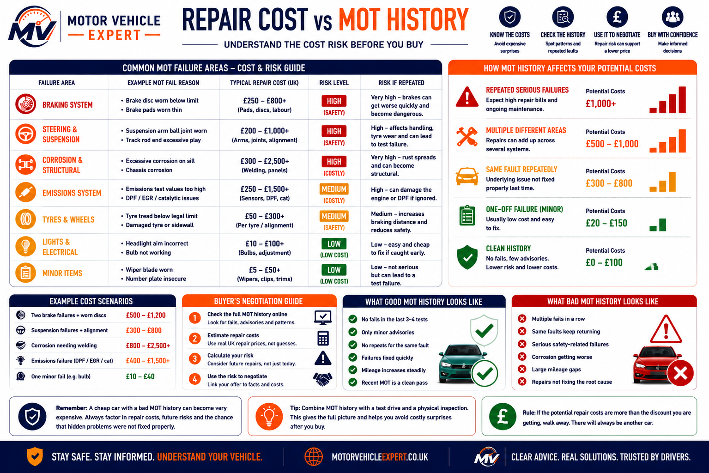

Should you buy a car with failed MOT history?
Yes, sometimes. A previous MOT failure does not automatically make a used car a bad purchase. Many vehicles fail on ordinary wear items such as bulbs, tyres, wipers or brake components and are repaired properly before passing a retest.
The real buying risk comes from repeated serious failures, worsening corrosion, recurring brake or suspension defects, emissions problems, mileage inconsistencies, missing repair evidence or a recent failed test shortly before the vehicle is offered for sale.
One Minor Historic Failure
A single old failure for a bulb, wiper or other low-cost item is normally less concerning when it was repaired promptly.
Repeated Wear Failures
Recurring tyre, brake or suspension defects can show delayed maintenance and may lead to near-term repair costs.
Serious Or Structural Failures
Repeated corrosion, steering, braking, emissions or structural failures need proper inspection and repair evidence.
Do not judge the vehicle by one failed MOT. Judge the pattern: what failed, how often it failed, whether the repairs were proved and whether the car’s current condition supports the paperwork.
What failed MOT history usually reveals
Many used cars have failed at least one MOT during their lifetime. A simple failure is not automatically a problem if the defect was repaired correctly and did not return. The history becomes more useful when you stop looking at individual tests and start looking for patterns.
One-Off Repair
A bulb, tyre, wiper or worn brake item followed by a quick retest pass can simply reflect normal vehicle maintenance.
Repeated Advisories
The same tyres, brake pipes, bushes or corrosion notes returning each year can suggest repairs are repeatedly delayed.
History Does Not Match
If the seller’s explanation, invoices, MOT records, mileage and current condition do not agree, investigate before proceeding.
A later MOT pass proves only that the car met the test requirements on that date. It does not prove the underlying repairs were high quality or that costly defects will not return.
The strongest used cars have MOT records, service invoices, mileage, visible condition and test-drive behaviour that all support the same story.
MOT failures that are usually less worrying
Not every MOT failure should put you off buying a used car. Many vehicles fail because of ordinary wear items that are inexpensive to repair and form part of routine maintenance. The important question is whether the fault was repaired properly and whether it keeps returning year after year.
A single historic failure for a bulb or worn tyre is usually far less concerning than repeated failures for the same component or patterns that suggest poor maintenance. Always compare the MOT history with invoices, service records and the car's current condition.
Bulbs And Exterior Lights
Blown bulbs, damaged lenses and faulty number plate lights are usually inexpensive repairs unless similar lighting faults appear repeatedly throughout the MOT history.
Wipers And Washers
Perished wiper blades, empty washer bottles or blocked washer jets are common maintenance items, but repeated failures may suggest poor vehicle care.
Tyre Wear
Tyres naturally wear out, but repeated tyre failures can indicate neglected maintenance, incorrect pressures, poor wheel alignment or worn suspension.
Low tyre tread MOT →Number Plate Defects
Dirty, cracked, insecure or poorly illuminated number plates are normally simple fixes and rarely indicate major mechanical problems.
One Historic Failure
A single MOT failure several years ago is usually much less important than repeated failures or advisories appearing across multiple MOT tests.
Prompt Retest Pass
A successful retest shortly after the failure often suggests the defect was repaired promptly, although invoices provide much stronger evidence than the pass alone.
Minor MOT failures become much less concerning when they appear only once, are repaired quickly and are supported by invoices or service records. Focus on long-term maintenance patterns rather than isolated incidents.
MOT failures that deserve much closer inspection
Some MOT failures indicate far more than normal wear and tear. While they do not automatically mean you should reject the car, they often point to expensive repairs, long-term neglect or safety concerns that deserve a thorough inspection before you commit to buying.
One historic failure may not be significant if it was repaired correctly, but repeated failures for the same system can reveal a pattern of poor maintenance. Always compare the MOT history with service records, repair invoices and the vehicle's current condition before making a decision.
Corrosion And Rust
Rust affecting sills, chassis rails, subframes, suspension mounts or seatbelt anchorage points can become extremely expensive to repair and may affect the vehicle's structural integrity.
Rust MOT guide →Brake Defects
Repeated brake imbalance, leaking hydraulic components, worn discs, damaged brake pipes or poor braking performance are major safety concerns and should never be ignored.
Brake warning signs →Suspension And Steering
Recurring failures involving springs, dampers, bushes, ball joints, steering racks or track rod ends can quickly become expensive and may indicate years of neglected maintenance.
Suspension MOT guide →Exhaust And Emissions
Repeated emissions failures can indicate problems with the engine, catalytic converter, DPF, EGR system, oxygen sensors or poor servicing. Diagnosis can sometimes be costly.
DPF warning guide →Dashboard Warning Lights
ABS, airbag, brake, stability control and engine management warning lights should always be investigated properly before buying because they may hide expensive faults.
Warning lights hub →Mileage Inconsistencies
Unexplained mileage jumps, unusually long testing gaps or inconsistent MOT records should always be investigated carefully as they may indicate clocking or incomplete vehicle history.
Clocked mileage guide →One serious MOT failure is not always enough to reject a vehicle if there is clear evidence that the repair was completed professionally. However, repeated failures involving corrosion, brakes, steering, suspension, emissions or mileage discrepancies should always trigger an independent inspection before purchase.
The MOT failure pattern matters more than a single failure
One failed MOT from several years ago is not usually a major concern if the fault was repaired properly and the vehicle has passed subsequent MOT tests without similar issues. Most cars experience normal wear items during their lifetime.
What should concern buyers is a repeating pattern. If the same faults appear year after year, it often suggests the vehicle has only been repaired when absolutely necessary rather than maintained proactively. Looking for patterns rather than isolated failures gives a much better picture of how the car has been cared for.
✓ Good Pattern
A minor historic failure followed by prompt repairs, clean MOT passes, regular servicing and supporting invoices usually suggests responsible ownership.
⚠ Repeated Failures
The same advisories or failures for brakes, tyres, suspension, steering or corrosion returning across several MOT tests often indicate delayed maintenance.
✓ Quick Retest Pass
A successful retest shortly after the original failure can be reassuring, particularly when invoices or repair records confirm the work carried out.
⚠ Recent Failure Before Sale
A vehicle advertised immediately after failing an MOT deserves careful inspection. Confirm exactly what was repaired and whether further work is likely in the near future.
The strongest used cars usually show improving MOT results over time. The weakest examples often display the same faults repeatedly because repairs have been delayed until the next MOT. Always read the complete MOT history rather than looking only at the latest pass certificate.
Always check advisories as well as MOT failures
Many used car buyers focus only on MOT failures, but advisories often tell the more important story. An advisory means the vehicle has passed the MOT, but the tester has identified wear, deterioration or developing faults that may require attention before the next test.
Repeated advisories can reveal a pattern of delayed maintenance. If the same tyres, brakes, suspension components or corrosion are mentioned year after year, it often suggests the owner repairs the car only when it becomes an MOT failure rather than maintaining it proactively.
Repeated Advisories
The same advisory appearing across multiple MOT tests is often a stronger warning sign than one isolated MOT failure because it suggests repairs have been postponed repeatedly.
MOT advisory guide →Buying A Car With Advisories
Many advisories are perfectly acceptable, but significant corrosion, brake wear, suspension play or tyre deterioration should influence your inspection, negotiation and final decision.
Buying with advisories →Future Repair Costs
Use both MOT advisories and previous failures to estimate what maintenance and repair costs are likely during the first year of ownership.
Repair costs guide →A clean MOT pass does not always mean a trouble-free car. Read every advisory alongside the failure history, service records and repair invoices to understand how well the vehicle has actually been maintained. Repeated advisories should always be reflected in the price you are prepared to pay.
Red flags that should make you slow down or walk away
A failed MOT history is only one part of the buying decision. The biggest risks usually appear when MOT records, service history, repair invoices and the vehicle's current condition do not tell the same story. These warning signs deserve much closer investigation before you commit to buying.
One or two concerns may be manageable if they are explained and supported by evidence. However, several warning signs together often indicate poor maintenance, hidden repair costs or an owner trying to sell before expensive work becomes necessary.
Dismisses Repeated Failures
If the seller repeatedly says previous MOT failures were "nothing" without providing invoices or explanations, investigate carefully before proceeding.
Rust Gets Worse Every Year
Progressively worsening corrosion advisories often indicate that repairs have been delayed and structural work may soon be required.
No Repair Proof
Recent MOT failures without invoices or supporting paperwork make it difficult to confirm that repairs were completed correctly.
Current Mechanical Problems
Warning lights, smoke, fluid leaks, knocking noises, vibration or poor braking suggest the vehicle still has unresolved faults.
History Doesn't Match
Mileage, service records, MOT history and interior wear should all be consistent. Differences deserve further investigation.
Seller Refuses Checks
Be cautious if the seller refuses an independent inspection, limits the test drive or pressures you into making a quick decision.
Failures Keep Returning
A vehicle that repeatedly fails for the same brakes, suspension, tyres or emissions faults often reflects long-term neglect.
Price Ignores Repair Risk
If the asking price is similar to cleaner examples despite obvious repair risks, negotiate accordingly or consider walking away.
Too Many Warning Signs
Several small concerns together can be a bigger warning than one major defect. Always assess the complete ownership history before buying.
Never judge a used car by its latest MOT pass alone. Compare the MOT history, advisories, service records, repair invoices, current condition and test-drive behaviour before making an offer. If several warning signs appear together, there are usually better cars available.
What to inspect before buying a car with failed MOT history
MOT history is useful, but it does not replace a physical inspection. A vehicle can pass its latest MOT and still have worn tyres, developing corrosion, weak suspension, warning lights, fluid leaks or expensive repairs approaching.
Use the previous MOT failures as a guide for where to inspect most carefully. If the history repeatedly mentions brakes, steering, suspension, corrosion or emissions, make those areas a priority during the viewing and test drive.
Tyres, Brakes And Steering
Check tread depth, uneven tyre wear, braking vibration, pulling, grinding, steering play and any knocking noises over rough roads.
Underside Condition
Inspect sills, jacking points, subframes, suspension mounts and brake pipes for corrosion, damage, oil leaks and coolant leaks.
Dashboard Warning Lights
Warning lights should illuminate during startup checks and then switch off. Missing lights or lights that remain on may indicate hidden faults.
Proper Test Drive
Drive on town roads, faster roads and uneven surfaces where safe and legal. Check acceleration, braking, steering, gearbox operation and engine temperature.
Test drive checklist →Repair Proof
Ask for itemised invoices showing how previous MOT failures were repaired, which parts were replaced and when the work was completed.
Compare All Records
Check that MOT mileage, service records, repair invoices, seller explanations and the vehicle's current condition all support each other.
Used car inspection checklist →Inspection Supports The History
Previous defects have been repaired, invoices are available and the car performs correctly during inspection and road testing.
Minor Wear Remains
Some maintenance is due soon, but the faults are understood, affordable and reflected in the asking price.
Current Condition Conflicts With Records
Unresolved warning lights, serious corrosion, poor braking, leaks or missing repair evidence suggest the previous problems may still exist.
Pay particular attention to every area mentioned in the MOT history. If the car previously failed on corrosion, brakes, steering or suspension and the seller cannot provide repair evidence, arrange an independent inspection before buying.
Use failed MOT history to negotiate the price
A failed MOT history can strengthen your negotiating position when it reveals upcoming repair costs, repeated maintenance problems or faults that may not have been resolved properly. The strongest offer is based on evidence rather than asking for an arbitrary discount.
Use the MOT history, current inspection, repair invoices and realistic UK repair prices together. If the vehicle needs brakes, suspension, wheel bearings, corrosion repairs or diagnostic work, the asking price should reflect the likely cost and risk.
Brake Repair Risk
Repeated brake advisories, imbalance, worn pads, scored discs or hydraulic defects can affect both safety and repair cost.
£120–£650+Wheel Bearing Replacement
Humming, excessive play or repeated bearing advisories can indicate a repair that should be priced before purchase.
£120–£350+Suspension Or Steering Repair
Worn arms, bushes, ball joints, springs, dampers or steering components can quickly increase first-year ownership costs.
£150–£900+Clutch Or Drivability Faults
Clutch slip, gearbox difficulty, flywheel noise or drivability problems should be diagnosed before agreeing a price.
£500–£1,500+Rust And Welding Repairs
Corrosion around structural areas, sills, subframes or suspension mounts can be difficult to estimate without inspection.
£200–£2,000+Warning Light Diagnosis
ABS, engine, airbag or emissions warning lights may require diagnostic testing before the true repair cost is known.
£50–£120+ diagnosis
A fair negotiation should account for confirmed defects, likely repair costs and the uncertainty created by missing evidence.
Failed MOT repair cost and negotiation guide
The table below gives broad UK repair ranges that may help when assessing a car with previous MOT failures. Actual prices vary by vehicle, region, parts quality and the extent of the defect.
| Repair Area | Typical UK Cost | How To Use It When Negotiating |
|---|---|---|
| Brake pads or discs | £120–£650+ | Deduct realistic repair cost if wear or defects remain unresolved. |
| Wheel bearing | £120–£350+ | Use noise, play or repeated advisories as evidence for inspection and price reduction. |
| Suspension or steering | £150–£900+ | Allow for diagnosis and the possibility of several worn components. |
| Clutch or flywheel | £500–£1,500+ | Do not rely on negotiation alone; confirm the fault before buying. |
| Corrosion or welding | £200–£2,000+ | Obtain a professional estimate because structural repair costs can escalate quickly. |
| Diagnostic testing | £50–£120+ | Add diagnosis cost before estimating any warning-light repair. |
Do not accept a small discount if the vehicle may need major structural, braking, suspension or clutch repairs. A reduced price does not remove the mechanical risk. If the likely cost cannot be established, arrange an independent inspection or walk away.
For wider budgeting, read our car repair costs guide UK.
Questions every buyer should ask before purchasing
A genuine seller should be able to explain previous MOT failures confidently and support their answers with paperwork. The more expensive the previous faults, the more important it becomes to verify that the repairs were completed properly rather than simply clearing the MOT.
Use the MOT history as your checklist during the viewing. Every previous failure should have a logical explanation, supporting invoices where possible and evidence that the problem has not returned.
Previous MOT Failures
What exactly did the vehicle fail on, when was the repair completed and who carried out the work?
Repair Invoices
Can you provide invoices or receipts showing the replacement parts and labour for previous MOT failures?
Repeated Advisories
Why have the same advisories or failures appeared on more than one MOT? What has changed since then?
Corrosion Repairs
Has the vehicle ever had welding, sill repairs, chassis repairs, underseal or rust treatment? Is there photographic evidence?
Current Condition
Are there any warning lights, unusual noises, oil leaks, coolant leaks, smoke or known mechanical problems today?
Cold Inspection
Can I inspect the vehicle from a completely cold start and complete a proper road test before making a decision?
Price Negotiation
Has the asking price already been adjusted to reflect the previous MOT failures or future repair costs?
Ownership History
How long have you owned the vehicle, why are you selling it and has it been serviced regularly during your ownership?
Honest sellers usually answer these questions clearly and can produce paperwork that supports their explanation. If answers are vague, inconsistent or defensive, slow down and verify everything independently before buying.
Useful support guides: questions to ask when buying a used car, how to check MOT history before buying and used car inspection checklist.
Best approach when buying a car with failed MOT history
A failed MOT history should encourage you to investigate further rather than automatically reject the vehicle. Many well-maintained cars have failed an MOT at some point for ordinary wear items that were repaired properly. The aim is to understand whether the failures represent normal ownership or a pattern of neglected maintenance.
Review the complete MOT history alongside service records, repair invoices, mileage, current condition and the seller's explanation. When all of these tell the same story, a previously failed MOT is often far less concerning than buyers first assume.
✓ More Likely A Good Buy
Minor historic failures, prompt repairs, supporting invoices, regular servicing, clean recent MOTs, consistent mileage and a fault-free test drive all suggest responsible ownership.
⚠ Higher Buying Risk
Repeated corrosion, brakes, suspension, steering, emissions or warning-light failures without repair evidence usually justify either a significant price reduction or an independent inspection.
✓ Independent Inspection
If the repair history is unclear but the vehicle still interests you, arrange a professional pre-purchase inspection before committing to buy.
⚠ Know When To Walk Away
If the paperwork, MOT history, vehicle condition and seller's explanation do not agree, there are usually better examples available elsewhere.
The strongest negotiating position comes from understanding the vehicle's history better than the seller expects. Read every MOT entry, estimate realistic repair costs and inspect the vehicle carefully before agreeing a price.
Best mechanic-style advice before you buy
Do not panic simply because a vehicle has failed an MOT in the past. Most used cars have some MOT history. The important questions are what failed, why it failed, how it was repaired and whether similar defects continued appearing in later MOT tests.
A single historic failure for a minor wear item is rarely a major concern. Repeated corrosion, braking, steering, suspension, emissions or mileage issues with little supporting paperwork are much stronger indicators that expensive repairs may still lie ahead.
Read Every MOT
Never rely only on the latest MOT certificate. Review the complete testing history to understand long-term maintenance.
Trust Invoices
Repair invoices and service records usually provide much stronger evidence than verbal explanations alone.
Judge Today's Condition
The current condition, road test and independent inspection should always support what the MOT history suggests.
Never buy a used car based on MOT history alone. Read the history, inspect the vehicle thoroughly, complete a proper test drive, verify repair invoices and make sure the seller's explanation matches the evidence. If several warning signs remain unanswered, walk away and keep looking.
Related used car and MOT guides
Continue through these related Motor Vehicle Expert guides to check MOT history, assess advisories, estimate repair costs and inspect a used car properly before buying.
Check MOT History
Learn how to read previous MOT tests, identify repeated defects and compare mileage before buying.
Check MOT history →Buying With Advisories
Understand which advisories are manageable and which should affect your offer or buying decision.
Buy with advisories? →MOT Advisory Meaning
See what MOT advisories mean, how serious they may become and when repairs should be prioritised.
Advisory meaning →Common MOT Failures
Review the most common reasons cars fail an MOT and what those defects may cost to repair.
Common MOT failures →Used Car Inspection
Use a structured inspection checklist to assess tyres, brakes, fluids, bodywork and mechanical condition.
Inspection checklist →Used Car Test Drive
Check clutch, gearbox, steering, suspension, braking, engine temperature and warning lights on the road.
Test drive checklist →Questions To Ask
Ask the seller the right questions about ownership, servicing, MOT failures, repairs and known faults.
Questions to ask →Best Mileage To Buy
Understand how age, mileage, condition and service history should influence a used car purchase.
Best mileage guide →No Service History
Assess the extra risk involved when a used car has missing or incomplete maintenance records.
No service history guide →Clocked Mileage Signs
Check for suspicious mileage changes, inconsistent records and vehicle wear that does not match the odometer.
Clocked mileage signs →Repair Costs Guide
Estimate likely first-year repair costs before negotiating on a car with previous MOT defects.
Repair costs guide →Brake Pad Costs
Compare typical UK brake pad replacement costs when previous MOT records mention brake wear.
Brake pad costs →Wheel Bearing Costs
Understand repair costs when MOT history mentions excessive bearing play or wheel-related noise.
Wheel bearing costs →Clutch Replacement
Estimate clutch and flywheel repair costs when the car shows drivability or transmission concerns.
Clutch cost guide →Diagnostics Hub
Use the diagnostics section to investigate warning lights, noises, leaks and drivability symptoms.
Diagnostics hub →Use the guides above together rather than relying on MOT history alone. The safest buying decision combines MOT records, service history, repair invoices, inspection results, test-drive behaviour and realistic repair costs.
Frequently asked questions about buying a car with failed MOT history
These are some of the most common questions UK buyers ask when they discover a vehicle has previously failed one or more MOT tests.
Is it bad if a car failed an MOT in the past?
Not necessarily. Many cars fail on routine wear items such as bulbs, tyres, wipers or brake components. What matters is whether the faults were repaired properly, whether they returned and whether the vehicle has been maintained well since.
Should I avoid buying a car with failed MOT history?
No. Many good used cars have failed an MOT at some point. Be much more cautious if the history shows repeated corrosion, steering, suspension, braking, emissions or structural problems with little evidence of proper repair.
Is a quick MOT retest pass a good sign?
Often yes. A prompt retest pass may suggest the original defects were repaired quickly. However, invoices and service records provide much stronger evidence than the MOT result alone.
Can failed MOT history help negotiate the price?
Yes. Previous failures and advisories can help estimate future repair costs. If expensive work is likely during your ownership, those costs should normally be reflected in the price you are prepared to pay.
Which MOT failures are usually the most serious?
Structural corrosion, brake defects, steering faults, suspension failures, emissions problems and safety-related warning lights generally deserve the closest inspection because repairs can be costly and directly affect road safety.
Should I get an independent inspection before buying?
Yes, especially if the vehicle has repeated MOT failures, poor service history, missing repair invoices or expensive faults such as corrosion, clutch, gearbox or engine problems.
Can a car pass after failing an MOT and still have problems?
Yes. Passing a later MOT only confirms the vehicle met the required standard on that test date. It does not guarantee that repairs were carried out to a high standard or that further faults will not develop soon afterwards.
Should I ask for repair invoices?
Absolutely. Invoices help prove what work was completed, which parts were fitted and when the repairs took place. They are much more useful than verbal assurances from the seller.
Can repeated advisories be worse than one MOT failure?
Yes. The same advisory appearing over several MOT tests often suggests repairs have been delayed repeatedly. This can reveal long-term neglect even if the vehicle continued passing its MOT.
How many MOT failures are too many?
There is no fixed number. A car with several minor failures spread over many years may be a better buy than one with repeated failures for the same serious defect. Always judge the pattern rather than simply counting failures.
Should corrosion always put me off buying?
Not always. Surface corrosion is common on older vehicles. Structural corrosion affecting sills, chassis rails, suspension mounting points or seat belt anchorage areas deserves a professional inspection before purchase.
What if the seller cannot explain previous MOT failures?
Treat this as a warning sign. A genuine owner should usually be able to explain major repairs and provide invoices or service records supporting the work carried out.
Is service history as important as MOT history?
Yes. MOT history shows what the vehicle failed or passed on test day, while service history shows how well it has been maintained throughout its life. The strongest used cars have both.
Can MOT history reveal clocked mileage?
Sometimes. Compare recorded MOT mileages with service records, invoices and the vehicle's overall condition. Sudden mileage drops or unexplained inconsistencies deserve further investigation.
What is the safest way to buy a car with failed MOT history?
Read the complete MOT history, review service records, inspect the vehicle thoroughly, complete a proper road test, request repair invoices and arrange an independent inspection if you have any doubts. Combining all of these checks provides a much clearer picture than relying on the MOT history alone.